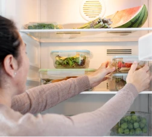

1 - Planeje
Abra a semana do plano e veja os cinco almoços já definidos.
Prepare 5 refeições num único domingo e ganhe tempo, saúde e economia todos os dias.
Acesso imediato Material digital 7 dias de garantia
Guia para 2 meses de marmitas sem repetições.
Lista de compras detalhada e com quantidade para cada semana.
Indicação individual do qual marmita para a geladeira e qual vai para o freezer

De
R$
69,90
Por
R$ 37,90
Abra a semana do plano e veja os cinco almoços já definidos.
Leve a lista da semana, organizada por setor do mercado.
Passo a passo para que o preparo aconteça dentro das horas planejadas.
Monte sabendo o que vai para a geladeira e o que vai ao freezer.

Aqueça, finalize o que precisa de toque fresco e almoce.
Arraste para ver os cinco passos.
Material de apoio incluído
Guia de substituições - troque proteína ou legume sem quebrar o plano.
Equipamento mínimo - o que realmente é necessário e o que é opcional.
Tabela de validade - geladeira, freezer e reaquecimento por tipo de preparo.

Eu cozinhava quase todo dia e ainda pedia comida duas vezes por semana. Agora é domingo à tarde e pronto. A parte que mais me ajudou foi saber o que congela e o que não.
Material digital · Acesso imediato · Seu para sempre · Itens baratos e saudáveis
Chega de gastar com Fast Food
R$
69,90
R$ 37,90
Pagamento único no Pix
ou em até
12× de R$ 3,92 no cartão.
Garantia de 7 dias · devolução integral
Compre, abra o material e faça a primeira semana. Se não servir para a sua rotina, escreva para o suporte dentro de 7 dias e devolvemos o valor integral - sem formulário, sem justificativa.
Para quem almoça em casa ou leva marmita e quer parar de decidir o almoço todos os dias. Funciona para uma pessoa e tem orientação para dobrar as quantidades.
Não. Domingo é a sugestão, mas a sequência funciona em qualquer dia. Há também a variação em dois blocos menores, se preferir dividir o preparo.
Ajuda, mas não é obrigatória. Todas as semanas têm alternativa em panela comum, com o tempo ajustado.
Cerca de 2h30, contando o tempo em que a comida cozinha sozinha. A montagem dos potes leva mais uns 20 minutos.
Sim. O guia de substituições lista trocas equivalentes de proteína, carboidrato e legume sem alterar o tempo de preparo nem a validade.
Cada preparo vem marcado como geladeira, freezer ou finalizar no dia, com prazo em dias e instrução de reaquecimento.
Sim, é 100% digital. Assim que o pagamento é confirmado você recebe o acesso por e-mail e pode usar no celular, tablet ou impresso.
Você tem 7 dias para pedir a devolução integral pelo suporte. Sem justificativa e sem burocracia.